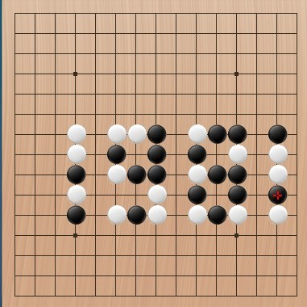
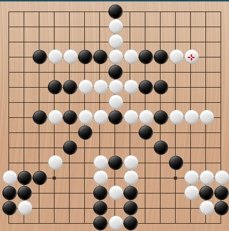

趣味题
#1 趣味题 作者：炫飞水月 发表时间：2011-9-1 21:34:37
五子棋之所以能让人着迷、上瘾，就因为它是一项有利于身心的游戏。小小的五子棋不但奥妙无穷，也全方位的体现着人生、解析这人生、演绎着人生。其中的变化更是让人眼花缭乱目不暇接，而一些棋的变化还可以从一幅幅情趣盎然的字画演绎开来。下面就是二个由数字“1981”和汉字“春”组成的趣味题，简单的VCF胜。


［ 冰雪笑醉 于 2011-9-1 21:57:14 时花20金币送鲜花一朵］
#2 Re:趣味题 作者：冰雪笑醉 发表时间：2011-9-1 22:02:56
=======上图对应的爱五子棋谱代码如下，以便你拆解：========
g8f8g7e8g6g5e7e6f6g4f4e4c4c5c6c7i7c8j6i6k6i4i5k4k5k7j4i8j8m7k8m6m8m4m5f5d7i2h3l5j3n7o8
======================================================
#3 Re:趣味题 作者：伏龙隐士 发表时间：2011-9-1 23:03:31
2楼的你的解法盘端和原题不一样啊（1981的1在N线上）！！
这是我的解，个人认为更有趣味性，白棋通过多手冲四最终抓黑子禁手取胜！！
=======上图对应的爱五子棋谱代码如下，以便你拆解：========
n9n8n6n5l9l8l6l5l7n7k9j9j8j7k7j5k5h5j6h6h7g9h9f9h8f7f8f5g7d9g5d8d7d6d5g6e8f6e6f3f4j3i4g4i6k4m6i2h1h3j1e2d1h2h4g2f2i3g3l3k3k2j2m4o6n3
======================================================
［此帖子已被 伏龙隐士 在 2011-9-1 23:04:48 编辑过］
［ 冰雪笑醉 于 2011-9-1 23:20:50 时花20金币送鲜花一朵］
#4 Re:趣味题 作者：伏龙隐士 发表时间：2011-9-1 23:59:54
我靠，那个春字题真他妈要命，还好白的反四一直为我指引着道路，我一路反过来终于在123手取胜，大家做这题先注意，原题题面上白已经有一个眠四了，所以黑需先反这个四同时解掉双四禁手。。。。。。。
=======上图对应的爱五子棋谱代码如下，以便你拆解：========
a2b2b3a4a3d5c4d8b4f8e6g8f7f10e8g10e10e12d10d12c12h12c8h13g12h14f12h10h11i10j10h9k12i12j12m12k10l12h15i8h8j8k8l8j7m8k6n8l5m4n3n4h5g5g3i5i3i4i2h3g2g4i1h1g1m3o3o4o2n2f11d9k7k9k4k5m6j3n7o8l7m7i6l9h7i7h6h4j9n5j11j13f6g6g7i9i11g11e9e7e5d4f4h2d6c7f5f3b9d7b6c6b7b5b10b8c10a10c11c9b12a13b13
======================================================
［ 炫飞水月 于 2011-9-2 19:10:21 时花20金币送鲜花一朵］
#5 Re:趣味题 作者：罔两 发表时间：2011-9-2 1:07:07
炫飞的大姐们，玩的就是有深度！！！
#6 Re:趣味题 作者：炫飞冰弦 发表时间：2011-9-2 1:27:46

靠 太有深度了，纠结死我了
#7 Re:趣味题 作者：秋风雾语 发表时间：2011-9-2 2:04:16
ice girl，你不是一直强烈要求要有深度的吗？#8 Re:趣味题 作者：炫飞盈儿 发表时间：2011-9-2 6:22:24
Re:趣味题
 太有趣了！刚开始我都蒙了还好看见了杀
太有趣了！刚开始我都蒙了还好看见了杀
#9 Re:趣味题 作者：伏龙隐士 发表时间：2011-9-2 10:37:17
我放在3楼和4楼的解求证啊！#10 Re:趣味题 作者：小元 发表时间：2011-9-2 11:20:09
要设计巧妙还是蛮有难度的#11 Re:趣味题 作者：伏龙隐士 发表时间：2011-9-2 11:35:08
对4楼的解给点评价吧，我昨天晚上想了两个钟头#12 Re:趣味题 作者：伏龙隐士 发表时间：2011-9-2 12:06:10
楼主，再出几道趣味题给大家做吧，用论坛画谱来发吧，别发图了，便于交流#13 Re:Re:趣味题 作者：炫飞水月 发表时间：2011-9-2 19:13:08
笑醉不会是在喝醉了的情况下，解题吧，整个盘面错了一线
#14 Re:Re:Re:趣味题 作者：冰雪笑醉 发表时间：2011-9-2 19:27:46
引用：
原文由 炫飞水月 发表于 2011-9-2 19:13:08 :
笑醉不会是在喝醉了的情况下，解题吧，整个盘面错了一线
 我本来还在想你第一手怎么不下天元的捏。。。原来是我眼花了。。
我本来还在想你第一手怎么不下天元的捏。。。原来是我眼花了。。
#15 Re:Re:趣味题 作者：炫飞水月 发表时间：2011-9-2 19:59:37
=======上图对应的爱五子棋谱代码如下，以便你拆解：========
h15h14h11h13g12h12f12e12c12d12j12i12k12l12j10m12k10i10k8h10j7g10e10f10d10h9h8g8f7f8e8d8c8i8e6j8k6l8l5m8h5i5c4d5b4g5b3a4a3g4a2i4g3h3i3m4g2n4g1h1i2o4i1m3n3n2o3b2o2n8f11d9k7k9k4k5m6j3n7o8l7m7i6l9h7i7h6h4j9n5j11j13i11g11e9e7f6g6g7i9e5d4f4h2f5f3d6c7b6c6b7b5b9d7b10b8c10a10c11c9b12a13b13b11d11
======================================================
以上是正解
#16 Re:Re:趣味题 作者：炫飞水月 发表时间：2011-9-2 20:07:12
=======上图对应的爱五子棋谱代码如下，以便你拆解：========
h8g9h9f9h7h6g7f7f8h5g5f5d5d6d7d8j8d9k7j9k9j7l9l8l7n8l6l5k5j5j6n7n9n5n6g6e8f6e6f3f4g4i6j3i4k4m6i2h1h3j1h2h4e2d1g2f2i3g3k2j2l3k3m4
======================================================
以上为正解
［此帖子已被 炫飞水月 在 2011-9-2 20:15:48 编辑过］
#17 Re:趣味题 作者：伏龙隐士 发表时间：2011-9-2 22:15:48
我在3楼4楼的解对了，太高兴了！#18 Re:趣味题 作者：簡單 发表时间：2011-9-3 0:14:44
 楼上，我衷心的表示祝贺
楼上，我衷心的表示祝贺